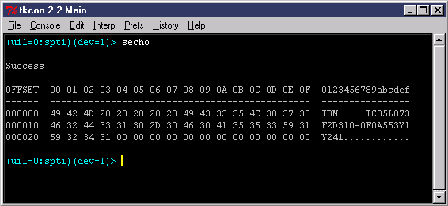
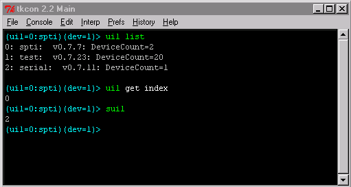
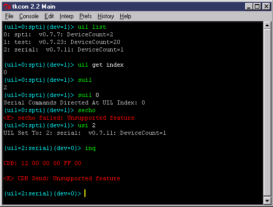
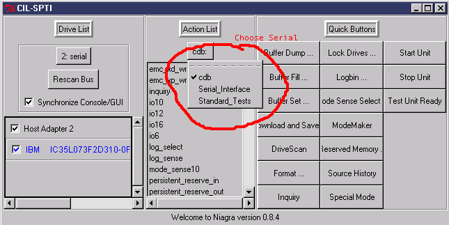
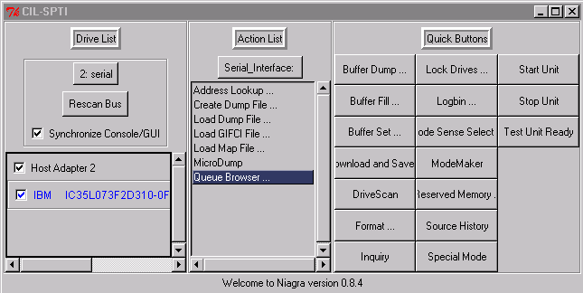
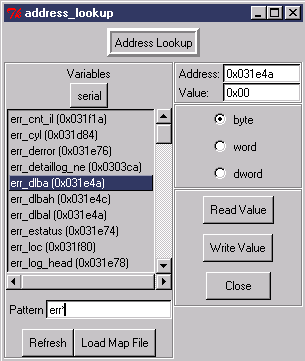

sechoThis command attempts to connect to the drive through the serial interface. Upon success, the drive will respond and you will see a message like the following:

Note: The first serial command you run takes about 2 seconds to execute, this is because the Serial Translator is calibrating the serial connection based on the speed of your machine.
The other useful commands besides secho are:
sread <address> <length> ?-dw? ?-dd?The sread command is used to read memory regions from the drive. The swrite command writes them. The sreadsp command returns the current location of the drive's stack pointer. All hexadecimal numbers must be preceded with 0x. Here are some examples of the commands in action:
swrite <address> <length> ?-dw? ?-dd? ?hex data...?
sreadsp
sread 0 100Note that, unlike Serial Debugger, Niagara uses the read and write buffers in its operations. This means that all of the buff commands can be used to manipulate, load and save the buffer contents. If the swrite command is not given any data on it's command line, buffer data is used (otherwise, the command line data is put in the send buffer and then used). These two commands groups, for example, are equivalent:
swrite 0x4000 0x10
swrite 0x4000 0x1 -dw 0x1234
swrite 0x4000 0x4 0x11 0x22 0x33 0x44bfs send 0 4 0x11 0x22 0x33 0x44
swrite 0x4000 0x4
If you went through the last module on UIL translators you may be
confused as to why we do not need to switch our uil to the serial translator
to talk through the serial port. The reason is because the following
commands:
sreadpoint to a UIL that is set independently of the CDB commands. The UIL pointed to is controlled by the suil command. A screenshot may clarify this:
swrite
secho
sreadsp

This screenshot shows the uil list. It also shows that the current uil for CDB commands (read10, inquiry, ...) is set to zero. The current UIL for serial commands (sread, swrite, ...) is set to 2. The separate categories allows us to use the serial port at the same time we execute CDB's without having to type uil set index each time.
This begs the question: can you call uil set index 2? can you call suil 0? Yes, and yes. In the first case the result will currently be "unsupported feature" whenever you execute a CDB (in our next generation of product the result will actually be a CDB transfer over the serial line!) In the second case, the driver will simply return "unsupported feature" every time you execute a serial command (because the spti driver does not know or care how to handle serial packets). Here is an example:



Here is a shot of Niagara's Address Lookup Dialog:

See the Niagara documentation if you use dump files. Niagara has full support for dump files but handles them in a slightly different way than Serial Debugger does (Niagara takes advantages of its buffers, a feature that Serial Debugger does not have).